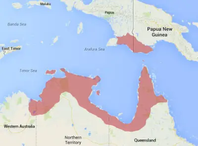
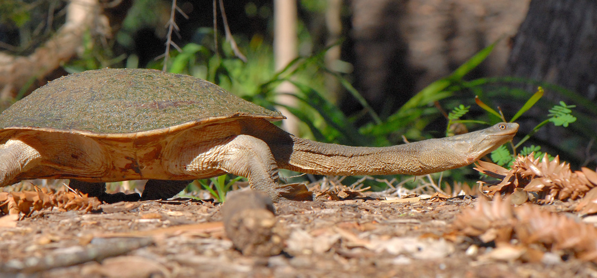
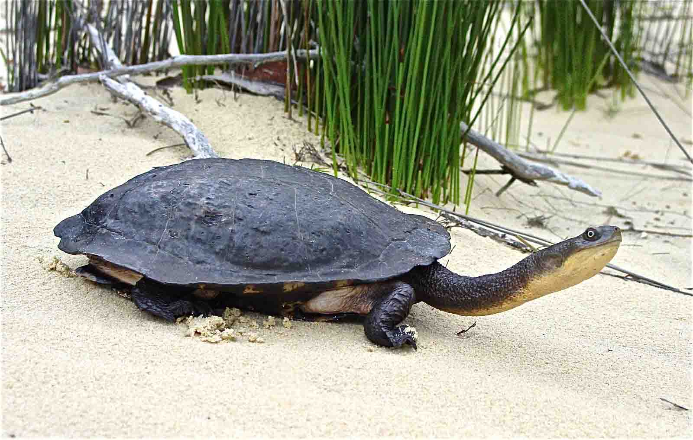
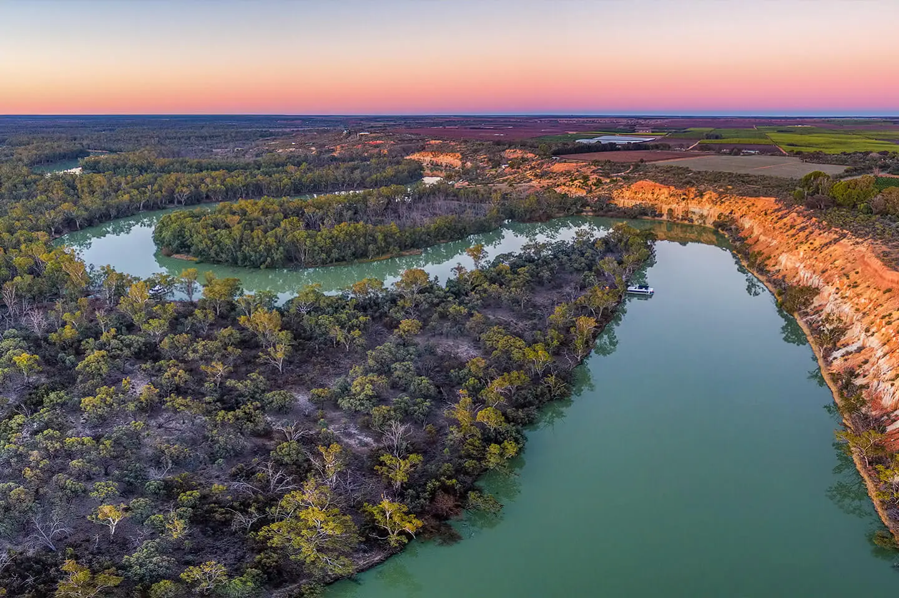

Scientific Classification
| Rank | Taxon |
|---|---|
| Kingdom | Animalia |
| Phylum | Chordata |
| Subphylum | Vertebrata |
| Class | Reptilia |
| Subclass | Archelosauria |
| Order | Testudines |
| Suborder | Pleurodira |
| Family | Chelidae |
| Genus | Chelodina Fitzinger, 1826 |
| Species | C. mccordi Rhodin, 1994 |
Two subspecies are recognized: C. m. mccordi (western Roti Island, the nominate form) and C. m. timorensis (Timor Island), the latter sometimes elevated to full species status. The genus Chelodina contains approximately 16 species distributed across Australia, New Guinea, and the Indonesian archipelago, all sharing the characteristic elongated neck.[2]
Physical Profile
Size Range
| Measurement | Range |
|---|---|
| Carapace length (adults) | 150-214 mm (average 179 mm) |
| Neck length | Approximately two-thirds of carapace length |
| Body mass | 444-816 g (average 602 g) |
| Hatchling carapace length | Approximately 25.5 mm |
Identification Markings
- Carapace — Wide and oval; low-domed; dull brown to dark brown coloration; smooth scutes
- Plastron (Ventral Shell) — Pale grey; hingeless; scute margins lack the dark seaming seen in some related species
- Neck — Elongated to approximately two-thirds of carapace length; darker brown dorsally, lighter ventrally; covered in small skin projections
- Head — Relatively small; bumpy with wart-like projections on the dorsal surface; eyes conspicuously ringed
- Limbs — Webbed feet adapted for swimming; clawed for grip during terrestrial movement
- Sexual Dimorphism — Females are generally larger than males of comparable age
Habitat and Geography
Habitats
The Roti Island snake-necked turtle is restricted to the low-elevation freshwater environments of Roti Island and uses habitat in a strongly seasonal pattern driven by the island's pronounced wet and dry seasons.[3]
- Shallow freshwater lakes and permanent ponds
- Seasonal swamps and wetlands active during the wet season (December-March)
- Flooded rice paddies and irrigation channels
- Forest refuges used for aestivation during the dry season
- Avoids brackish and saline water entirely
Distribution
The species is endemic to Roti Island (also spelled Rote), a small island of approximately 1,200 km² in the eastern Lesser Sunda Islands of Indonesia, situated west of Timor:[1]
- Western Roti Island: the core range of the nominate subspecies C. m. mccordi; two known populations across roughly 70 km² of suitable habitat
- Timor Island: range of the subspecies C. m. timorensis, sometimes treated as a separate species; subject to similar collection pressure
The total known range of the species is among the smallest of any freshwater turtle in the world, making it exceptionally vulnerable to localized threats.[1]
Distribution Map

Fig. 1. Geographic range of Chelodina mccordi, restricted to Roti Island and associated areas in the eastern Lesser Sunda Islands of Indonesia. Source: IUCN Red List.[1]
Ecology and Behavior
Feeding and Diet
The Roti Island snake-necked turtle is a generalist carnivore. It employs ambush predation, using its elongated neck as a ballistic organ to strike rapidly at prey before it can escape.[2]
| Prey Category | Examples |
|---|---|
| Insects | Aquatic insects and larvae; surface-fallen terrestrial insects |
| Fish | Small fish taken by ambush strike |
| Amphibians | Tadpoles and small frogs |
| Mollusks | Small freshwater snails and bivalves |
| Aquatic worms | Opportunistically taken from substrate |
Behaviors and Adaptations
- Nocturnal activity: Active primarily at night; rests concealed during daylight hours
- Aestivation: During the dry season, individuals burrow under rocks, boulders, and leaf litter in forested areas and enter a dormant state until water returns
- Seasonal habitat shifts: Moves between aquatic wetland habitat during the wet season (December-March) and terrestrial forest refuges during the dry season
- Chemical defense: Musk glands on each side of the body release a foul-smelling secretion when the animal is threatened or handled
- Lateral neck retraction: Retracts neck sideways under the shell margin (pleurodiran style); cannot fully conceal the head unlike cryptodiran turtles
- Solitary: No social grouping outside of the mating season
Communication
Like most chelid turtles, C. mccordi relies primarily on chemical and tactile signals for social interactions; auditory communication is minimal.[2]
- Chemical Signals — Pheromone release is suspected to play a role in mate recognition and attraction during the breeding season
- Tactile Signals — Physical contact and animated movement are used during courtship; males initiate contact with the female prior to mating
- Auditory Communication — No significant vocal signaling; the species lacks the structures for complex call production
Life History Cycle and Breeding Behaviors
Reproduction is linked to the seasonal rainfall cycle, with egg-laying concentrated in the wet-to-dry season transition.[3]
- Mating system: Polygynandrous; both males and females may mate with multiple partners within a season
- Courtship: Males pursue females using pheromonal and tactile cues to initiate mating
- Egg-laying period: February through September; females may nest up to three times per year
- Clutch size: 9-13 eggs per clutch; eggs approximately 29.8 mm long by 20.1 mm wide
- Incubation period: 112-179 days (average 146 days); duration is temperature-dependent
- Hatching: Hatchlings typically emerge in November at approximately 25.5 mm carapace length
- Sexual maturity: Approximately 7-8 years of age in both sexes
- Lifespan: Unknown for this species; related snake-necked turtles are estimated to live 30-40 years
Predators
Adult turtles have few natural predators, but eggs and hatchlings face significant mortality. The overwhelmingly dominant threat to all life stages is human collection:[2]
- Feral pigs: The primary natural predator; root out and consume both eggs in nests and adults encountered on land
- Wading birds: Herons and egrets may take hatchlings and small juveniles near the water's edge
- Humans (primary threat): Mass collection for the international pet trade beginning in the early 1990s reduced the wild population by an estimated 99% or more; collection pressure persists despite CITES Appendix I protection
Media and Supporting Visuals

Fig. 2. Chelodina mccordi with neck extended, showing the characteristic elongated neck that gives the species its common name. The neck reaches approximately two-thirds of the carapace length.

Fig. 3. Adult Chelodina mccordi on land. The dull brown carapace and pale grey plastron are visible. During the dry season the species moves overland to forest refuges for aestivation.

Fig. 4. Shallow freshwater wetland, representative of the seasonal aquatic habitat used by Chelodina mccordi during the wet season on Roti Island.
References
- van Dijk, P. P., Shepherd, C., and Shi, H. (2018). Chelodina mccordi. IUCN Red List of Threatened Species 2018: e.T4517A113530856. IUCN, Gland, Switzerland. IUCN Red List
- Rhodin, A. G. J. (1994). Chelodina mccordi, a new species of snake-necked turtle (Testudines: Chelidae) from Roti Island, Indonesia. Breviora, 498, 1-31. Animal Diversity Web
- IUCN/SSC Tortoise and Freshwater Turtle Specialist Group (2008). Chelodina mccordi Rhodin 1994 — Roti Island Snake-necked Turtle. Conservation Resource Material for Freshwater Turtles 5(008). IUCN TFTSG